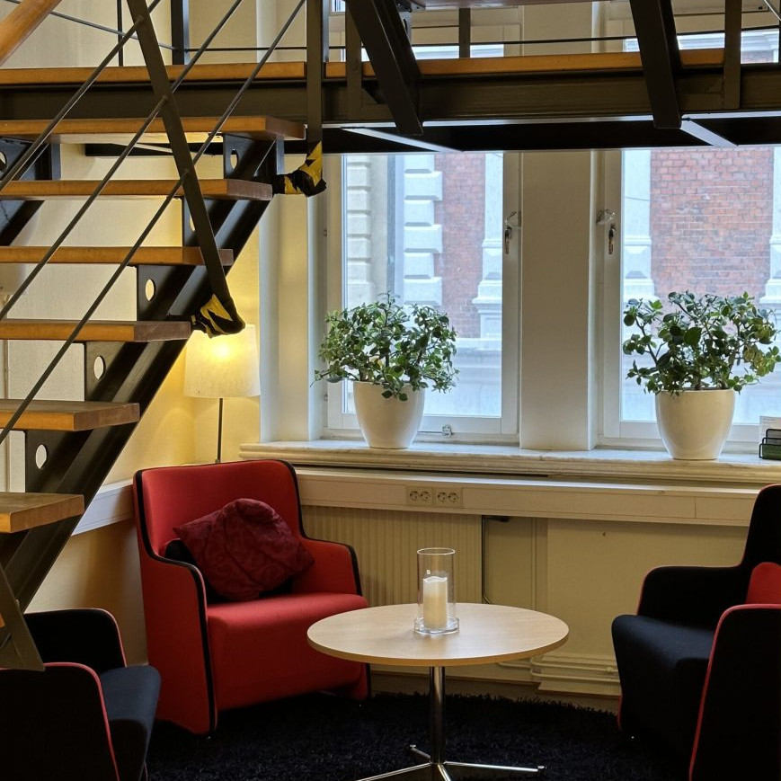

Privat KBT i Kristianstad
Få stöd utan att vänta
- Ingen remiss krävsBoka direkt hos oss
- Korta väntetiderUtan kö
- 24+ års erfarenhetInom rehabilitering och bedömning
Det här kan du få hjälp med
Här får du möjlighet att tillsammans med en erfaren terapeut arbeta med det som känns svårt, oavsett om det handlar om stress, oro, nedstämdhet eller andra utmaningar.
Vi möter dig där du är, och tillsammans hittar vi vägen framåt.
- Stress
- Oro
- Nedstämdhet
- Andra utmaningar
Så går det till
Berätta kort vad du söker hjälp för
Fyll i formuläret här på sidan, eller ring oss.
Vi hör av oss
Vi berättar hur du kommer igång.
Du bokar en tid som passar dig
Sedan träffar du din terapeut hos oss i Kristianstad.
Vad är KBT?
KBT står för kognitiv beteendeterapi, en behandling som är vetenskapligt prövad. Den hjälper dig att förstå och förändra tankar, känslor och beteenden som står i vägen för ditt välmående.
Tillsammans med en erfaren terapeut arbetar du aktivt för att hitta nya sätt att hantera svårigheter och stärka din psykiska hälsa.
Boka ditt första samtal
Fyll i formuläret så hör vi av oss. Du kan också ringa oss.
- Ingen remiss
- Ingen kö
- 1 200 kr per samtal
Hellre ringa? 044 - 18 85 80
Vi använder dina uppgifter för att kontakta dig om din bokning. Läs vår integritetspolicy.
Mår du akut dåligt? Ring 112 vid akut fara. För sjukvårdsrådgivning dygnet runt, ring 1177.

Du träffar oss i Kristianstad
Adaptus är ett privatägt vårdföretag med över 24 års erfarenhet av rehabilitering och bedömning. Vi är ackrediterad vårdvalsenhet inom Region Skåne.
Västra Storgatan 22, 1 tr291 30 Kristianstad
- Med bil: Du parkerar enklast på Stora Torg.
- Med tåg eller buss: Resecentrum ligger 5 minuters gångavstånd från oss.
Vanliga frågor
Behöver jag remiss?
Nej. Du kan boka privat KBT direkt hos oss, utan remiss och utan kö.
Vad kostar det?
Ett samtal kostar 1 200 kronor.
Vad händer när jag har skickat formuläret?
Vi hör av oss till dig och berättar hur du kommer igång. Du kan också ringa oss på 044 - 18 85 80.
Det är första gången jag söker hjälp. Är det okej att vara osäker?
Ja. Det är helt okej att vara osäker på vilken hjälp du behöver. Allt du berättar behandlas konfidentiellt.
Kan jag ringa eller mejla i stället?
Ja. Ring oss på 044 - 18 85 80 eller mejla info@adaptus.se.